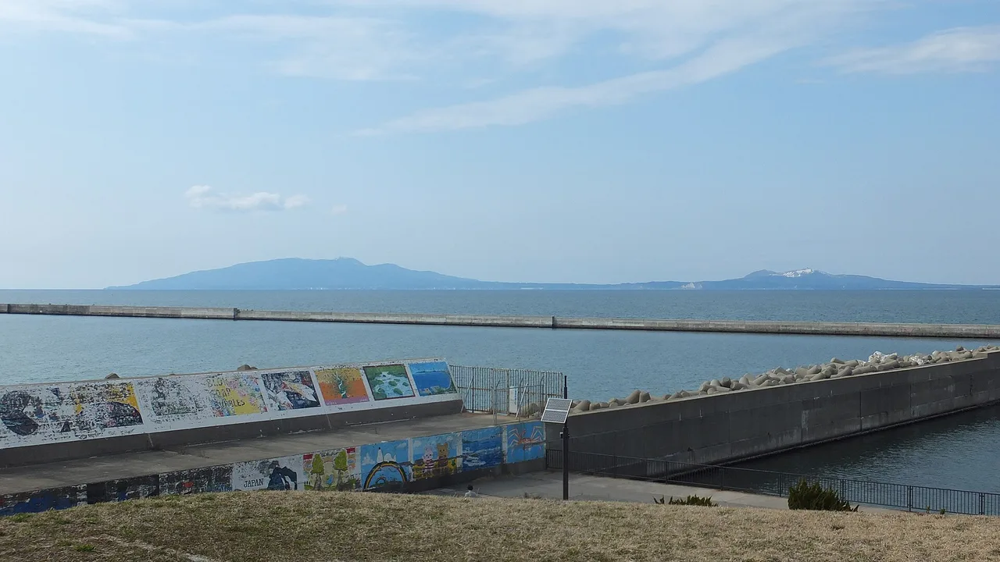

Akita Travel Guide for Japanese Learners
Deep snow, rice and sake country, and the fierce Namahage folk tradition.

Akita is rural, snowy, and proud of its traditions — from the Kantō pole-lantern festival to the Namahage ogre-visitors of the Oga Peninsula. It's also famed for beautiful rice and the Akita dog.
History & background
Akita (秋田) is old rice-and-sake country. Kakunodate (角館) preserves Edo-period samurai residences, and the Oga (男鹿) peninsula keeps the Namahage (なまはげ) New Year ritual alive.
What to see
- Kakunodate — preserved samurai district
- Lake Tazawa, Japan's deepest lake
- Nyūtō Onsen hot springs
- Oga Peninsula and the Namahage
Hidden gems
- Odate Jukai Forest offers scenic hiking trails through beech woodlands with traditional woodcraft workshops in small mountain villages nearby.
- Inaniwa Udon Museum in Yuzawa celebrates Japan's finest hand-pulled udon noodles with tastings and demonstrations of century-old techniques.
- Oga Aquarium GAO features the world's largest collection of jellyfish species and rare deep-sea creatures from the Sea of Japan.
Some links above are affiliate links. We may earn a commission at no extra cost to you. We only list services we'd use ourselves.
What to eat
Try kiritanpo (mashed-rice skewers) hot pot and local sake.
Getting there & when to go
Getting there: Akita is ~3h40m from Tokyo by Akita Shinkansen.
Best time: Spring for Kakunodate's weeping cherries; winter for snow and onsen.
When to go — season by season
Spring drapes Kakunodate in weeping cherries; summer raises the towering Kantō (竿燈) lantern poles in early August. Autumn colours Lake Tazawa (田沢湖), and winter buries the region in snow and steam.
Local culture
Akita's wood-carving tradition runs deep—locals still craft small **kokeshi dolls** and **netsuke** in home workshops. Visitors wandering Kakunodate's side streets might spot artisans working by window light, and many welcome questions about techniques passed through families for generations.
During winter festivals, you'll notice residents wearing **mōfuku** (thick padded work coats) and **tabi socks**—practical dress shaped by brutal snowfall. These aren't costumes but daily winter wear, reflecting how geography shapes Akita culture more visibly than anywhere in Japan's warmer regions.
A suggested visit
Pair Kakunodate's samurai street with nearby Lake Tazawa, Japan's deepest lake. Soak at the rustic Nyūtō Onsen (乳頭温泉) before heading back — it's one of Tōhoku's most atmospheric hot springs.
Seasonal tip: Book Nyūtō Onsen accommodations by July for December–February stays, as mountain hot springs fill quickly once snow season begins in late November.
Local etiquette: When visiting Namahage museums or winter festivals, avoid taking flash photographs of masked performers—this disrupts the sacred, intimidating atmosphere that makes the tradition meaningful to local children.
The Akita dog (Akita-inu) hails from here — you'll find friendly meet-and-greet spots.
Some links above are affiliate links. We may earn a commission at no extra cost to you. We only list services we'd use ourselves.
Common questions
Q. How do I get to Akita from Tokyo, and how long does it take?
A. The Akita Shinkansen takes about 3 hours 40 minutes from Tokyo. Book tickets in advance during winter—snow conditions can affect scheduling, so arrive early.
Q. What's the best time to visit Akita?
A. Spring brings weeping cherries to Kakunodate; winter offers deep snow and onsen at Nyūtō. Winter visits require warm gear but reward you with fewer crowds and authentic snow-country atmosphere.
Q. What should I eat in Akita, and what makes it special?
A. Kiritanpo hot pot—mashed rice on skewers—is the signature dish. Pair it with local sake, which Akita produces from its celebrated rice. Eat at traditional inns for the full experience.